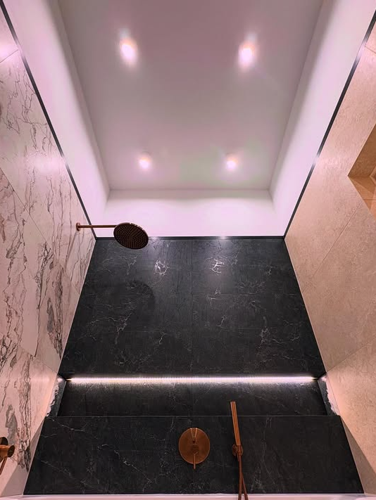
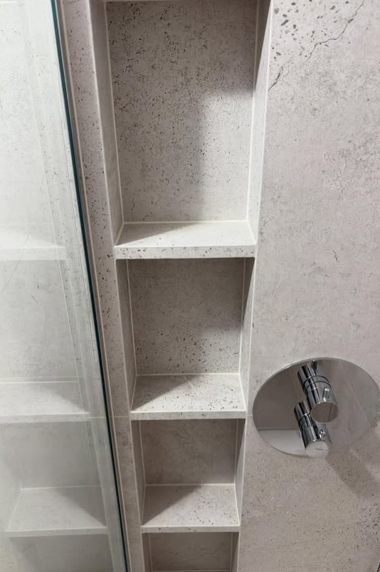
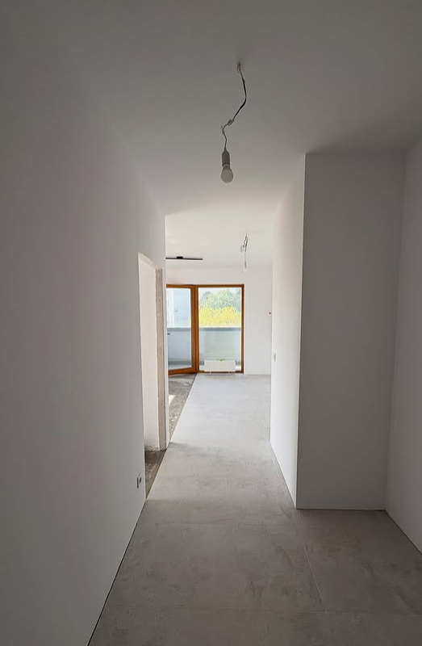
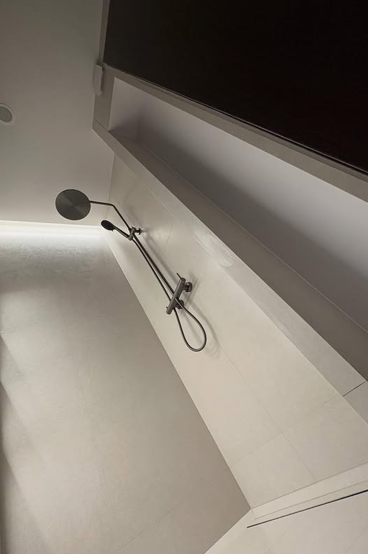
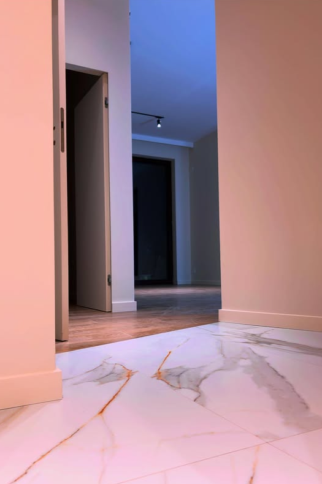

Wykończenia
Ściany, sufity, zabudowy, montaż i estetyczne wykończenie wnętrz.
P&P Profinish realizuje wykończenia wnętrz oraz wybrane prace inwestycyjne: hydraulikę, elektrykę, wykopy liniowe, roboty ziemne, wznoszenie budynków, zadania specjalistyczne dopasowane do konkretnej budowy i inwestycji.
Zakres działań
Działamy elastycznie, dlatego możemy wejść w inwestycję jako główny wykonawca konkretnego etapu albo przejąć wybrane zakresy prac technicznych i budowlanych.
Ściany, sufity, zabudowy, montaż i estetyczne wykończenie wnętrz.
Instalacje i prace pomocnicze realizowane na etapie inwestycji.
Prace elektryczne wykonywane jako osobny zakres lub element całej realizacji.
Wykopy, przygotowanie terenu oraz wsparcie prac terenowych na budowie.
Wsparcie prac konstrukcyjnych i realizacji od etapu budowy do dalszych robót.
Szeroki zakres zadań dopasowanych do potrzeb inwestycji i bieżącej organizacji prac.
Oferta
Działamy tam, gdzie liczy się dokładność, sprawna organizacja i gotowość do wejścia w różne etapy prac.
Realizacje mieszkań, domów, lokali i przestrzeni użytkowych z naciskiem na estetykę i detale.
Zakres prac dopasowany do inwestycji: od przygotowania po wsparcie ekip branżowych.
Realizacja prac elektrycznych jako oddzielny zakres lub część większej inwestycji.
Roboty pomocnicze, wykopy i zadania specjalne zależne od potrzeb konkretnej realizacji.
Dobrze odnajdujemy się w szerszym zakresie działań, gdy projekt wymaga kilku kompetencji w jednym miejscu.
Jeśli inwestycja nie mieści się w klasycznym schemacie, warto porozmawiać. Pracujemy elastycznie i konkretnie.
Usługi
P&P Profinish pracuje przy remontach mieszkań, wykończeniach wnętrz, instalacjach oraz wybranych etapach budowy. Możemy zająć się całym mieszkaniem od A do Z albo wejść tylko w konkretny zakres, jeśli inwestycja tego wymaga.
Realizujemy remonty mieszkań, domów i lokali użytkowych: przygotowanie powierzchni, ściany, sufity, posadzki, glazurę, biały montaż, detale wykończeniowe i końcowe dopracowanie wnętrza.
Wykonujemy remonty łazienek, strefy prysznicowe, zabudowy wnęk, układanie glazury, gresu i płytek wielkoformatowych, montaż armatury oraz estetyczne wykończenie narożników i połączeń.
Przygotowujemy zabudowy z płyt gipsowo-kartonowych, sufity podwieszane, ścianki działowe, obudowy instalacji oraz adaptacje poddaszy pod wygodną i funkcjonalną przestrzeń.
Wykonujemy instalacje hydrauliczne, podejścia wodno-kanalizacyjne, prace przy wodociągach, przygotowanie instalacji pod łazienki i kuchnie oraz montaż kotłowni w zakresie ustalonym z inwestorem.
Prace elektryczne prowadzimy jako osobny zakres albo część większego remontu. Przygotowujemy instalacje pod oświetlenie, gniazda, sprzęty domowe i dalsze etapy wykończenia.
Realizujemy wykopy liniowe pod instalacje, wykopy fundamentowe, przygotowanie terenu, roboty ziemne, prace przy sieciach PPOŻ i wodociągach oraz zadania terenowe dopasowane do budowy.
Pomagamy przy wznoszeniu budynków, pracach betonowych, przygotowaniu elementów konstrukcyjnych oraz etapach, w których liczy się dobra organizacja i praktyczne doświadczenie na budowie.
Wykonujemy dekoracyjne wykończenia ścian, w tym beton architektoniczny, tynki dekoracyjne, stiuki i inne rozwiązania, które mają wyglądać nowocześnie, ale nadal pasować do codziennego użytkowania.
Jeśli prace nie mieszczą się w jednej kategorii, ustalamy zakres indywidualnie. Działamy przy mniejszych remontach, większych inwestycjach i zadaniach wymagających kilku kompetencji w jednym zespole.
Galeria
Ta sekcja jest przygotowana pod uzupełnienie o prawdziwe zdjęcia z wykonanych prac. Na razie zostawiamy elegancki placeholder pod dalsze materiały.

Kontrastowe plyty, oswietlenie liniowe i armatura w cieplym odcieniu metalu.

Precyzyjne wykończenie detali i funkcjonalne półki przygotowane pod codzienne użytkowanie.

Czyste linie, przygotowane powierzchnie i baza pod dalsze wykończenie całego mieszkania.

Nowoczesna strefa kąpielowa z oświetleniem liniowym i dopracowanym detalem montażowym.

Eleganckie zestawienie materiałów i staranne wykończenie łączenia stref komunikacyjnych.

Prowadzenie instalacji w wykopie z zachowaniem ciągłości prac i przygotowaniem pod kolejne etapy inwestycji.
O nas
Stawiamy na jakość wykonania, odpowiedzialność za termin i kulturę pracy na inwestycji. Łączymy doświadczenie w wykończeniach wnętrz, remontach łazienek, instalacjach, robotach ziemnych i pracach budowlanych, dlatego możemy sprawnie przejść od jednego etapu do kolejnego bez zbędnych przestojów.
Dlaczego my
Jak pracujemy
Ustalamy zakres, miejsce realizacji i priorytety prac.
Proponujemy sposób działania dopasowany do etapu budowy.
Wchodzimy na budowę z zespołem przygotowanym do konkretnego zakresu.
Zamykamy prace lub przechodzimy płynnie do kolejnych zadań.
Kontakt
Formularz może wysyłać wiadomości bezpośrednio na firmowy adres e-mail. Konfiguracje Gmaila podpinamy po stronie serwera.
Obszar działania: realizacje lokalne i inwestycje ustalane indywidualnie